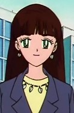

|
Gary Oak |
- Pokemon
- Pokemon Chronicles
- Pokemon Advanced Generations
- Pokemon Diamond and Pearl
|
Gary Oak is a playmate and next-door neighbors when they were younger, but drifted apart cause of their love of Pokemon. He is show-off and has an arrogant personality. As a mature, he grows nicer and more humble person. He and Ash are rivals. |
| |
Olesia |
|
Olesia is a Pokemon Trainer cares for several Wooper. She built and run a Pokemon Day Care that specializes in Wooper called Wooper Pond Preschool. She has always had an affinity for Wooper. |
|  |
Saori |
- Sailor Moon Super S
- Sailor Moon Super S Memorial
|
Saori is a friend of Mamoru who attended the same high school and university and friend of Kobayashi. She has a crush on Mamoru. She is a prospect lawyer who is good-hearted and self-righteous. |